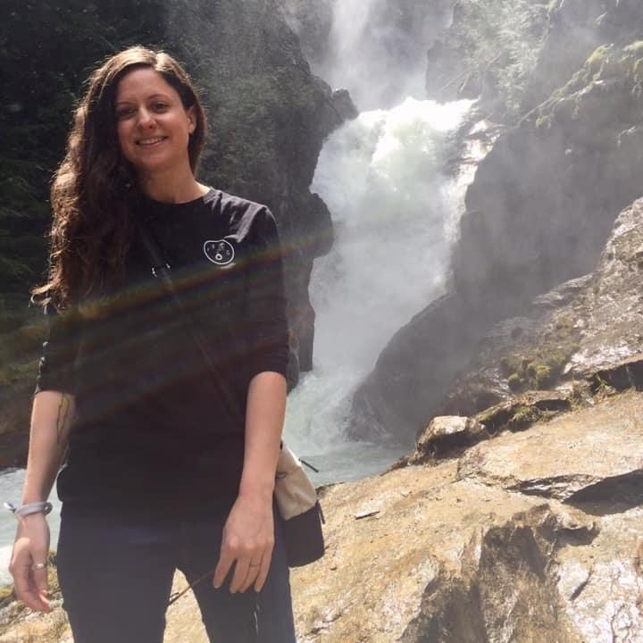

Welcome to my portfolio! Here you will find a list of my projects and information about me.
I enjoy hiking around the Pacific NorthWest with my husband, hanging out with our 3 adorable cats: Olive, Lupita, and Bonita, traveling when possible, drinking coffee, and doing home improvement projects and talking about said projects.
Here's a bit about my background
I have a B.S. degree in Environmental Studies with a minor in Geography from Portland State University. I have also taken a handful of Computer Science classes from Portland Community College. My interest in Computer Science and coding initially developed after talking GIS classes during my Environmental Studies undergrad.
I have been working since late August 2020 with a software team as the Software Support Specialist. This position has given me some exposure to the software development process.
This is the first project I created! It was done with the help of Epicodus and is mostly their template.
This is a page dedicated to animal adoption of 5 adorable cats and dogs
Warning: You will leave this page feeling hungry. This project was to create a mock webpage for a Cupcake shop